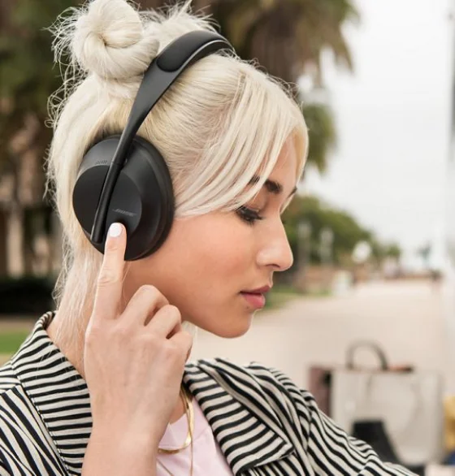

<section class="section design">
  <div class="container">
    <div class="wrapper">
      <picture>
        <source
          srcset="
                  ../assets/img/design/girl-desktop.webp 1x,
                  ../assets/img/design/girl-desktop@2x.webp 2x
                "
          media="(min-width: 1440px)"
        />
        <source
          srcset="
            ../assets/img/design/girl-tablet.webp 1x,
            ../assets/img/design/girl-tablet@2x.webp 2x
          "
          media="(min-width: 768px)"
        />
        <source
          srcset="
            ../assets/img/design/girl-mobile.webp 1x,
            ../assets/img/design/girl-mobile@2x.webp 2x
          "
          media="(min-width: 768px)"
        />

        
      </picture>
      <div class="premium-design">
        <h2 class="design-main">Premium design and comfort</h2>
        <ul class="design-list">
          <li class="design-list-item">
            <h3 class="design-title">11 levels of noise reduction</h3>
            <p class="design-text">
              With the new Bose Noise Canceling Headphone 700, you can smoothly
              increase or decrease the level of noise cancellation. You can be
              heard perfectly and you hear the interlocutor clearly, even in a
              noisy environment!
            </p>
          </li>
          <li class="design-list-item">
            <h3 class="design-title">Comfort up to max level</h3>
            <p class="design-text">
              Stylish, lightweight stainless steel headband with soft, angled
              cups of headphones for comfortable seating. The inner side is made
              of soft gel lining that fits well to the head.
            </p>
          </li>
        </ul>
      </div>
    </div>
  </div>
</section>
